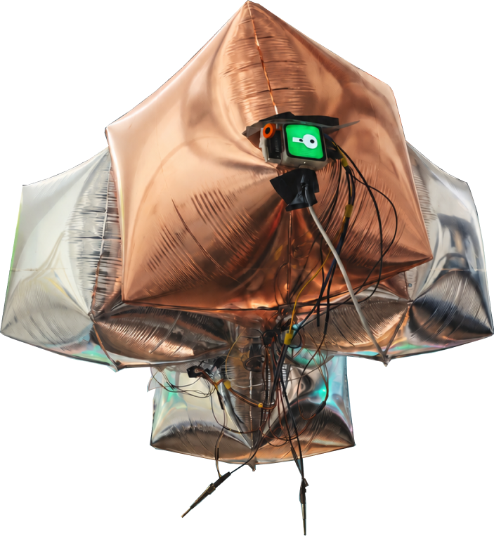

Routine Walking
UNION
UNION
The rippled surface refracts the illusions of everyday life.
Leave a little room to wander.

有点黏人。刚刚好。
FIG. 01 — AN ORDINARY DAY, PLUS ONE.LIGHTER THAN AIR / CLOSER TO YOU
SCROLL TO WANDER ↓
FLOATING THROUGH THE EVERYDAY.
生活照常。
只是多了一个搭子。
它会跟着你，悬在半空中。
你停下来，它也有自己的小心思。
散步、发呆、赶工，或者什么都不做——它都在。
01 / FLYING & FLOATING02 / ALWAYS FOLLOWING03 / A MIND OF ITS OWN
FIVE WAYS TO SPEND AN ORDINARY DAY.
SAME COMPANION.
DIFFERENT MOMENTS.
同一个伙伴。
每一刻，都有点不一样。
01 / 05CONCEPT PREVIEW · 概念动态预览
A WALK, WITH A LITTLE DETOUR.走你的路。
走你的路。
它会跟上。
FROM THIS SCREEN, INTO YOUR DAY.
MEET
THE REAL THING.
屏幕里的相遇，
留给现实里的陪伴。
UNION / WALKING COMPANION
FLOATING. FOLLOWING.
FEELING A LITTLE ALIVE.↗
FEELING A LITTLE ALIVE.↗
COMPANION CONNECTION模拟体验 / MOCK
先打个招呼？
连接一个模拟伙伴，看看它会如何回应你。
此处不会连接或控制真实硬件。
尚未连接
- 伙伴 / NAME
- —
- 编号 / ID
- —
- 此刻 / MOMENT
- Walking
- 心情 / STATE
- 等待相遇
A LITTLE NUDGE
连接后，可以试着叫它过来。
当前为模拟连接。真实设备通信接口已独立预留。